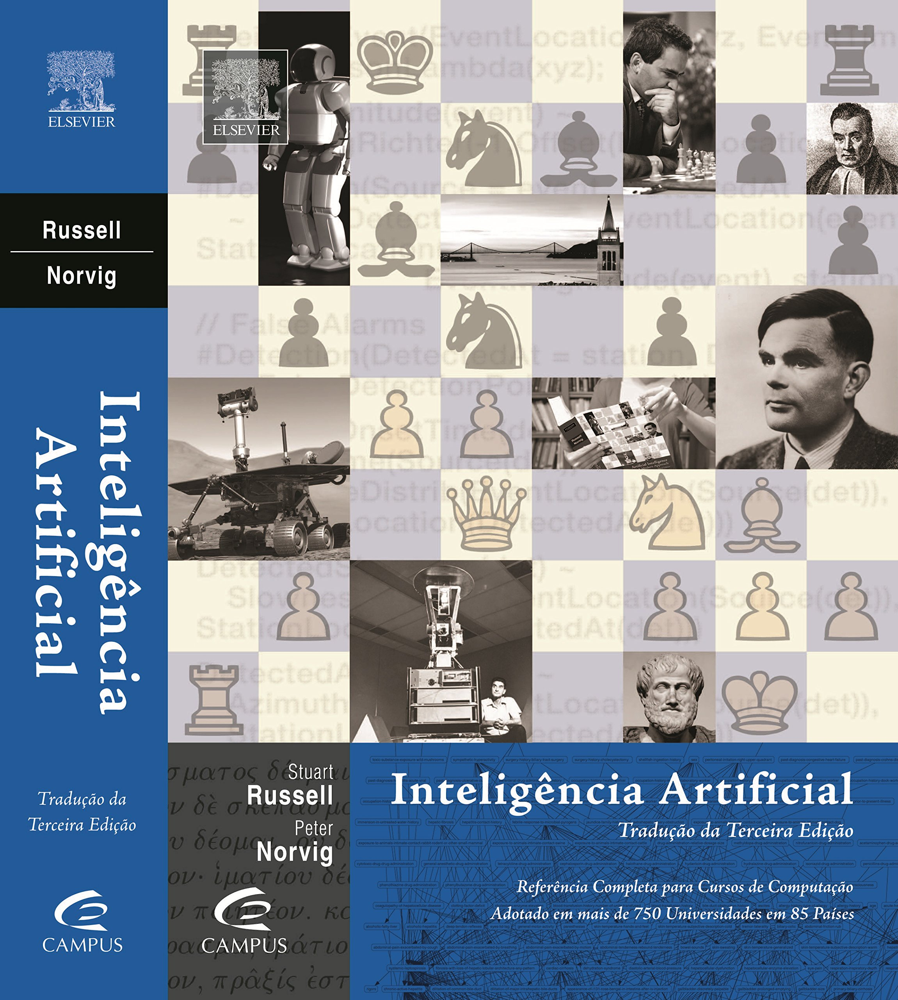
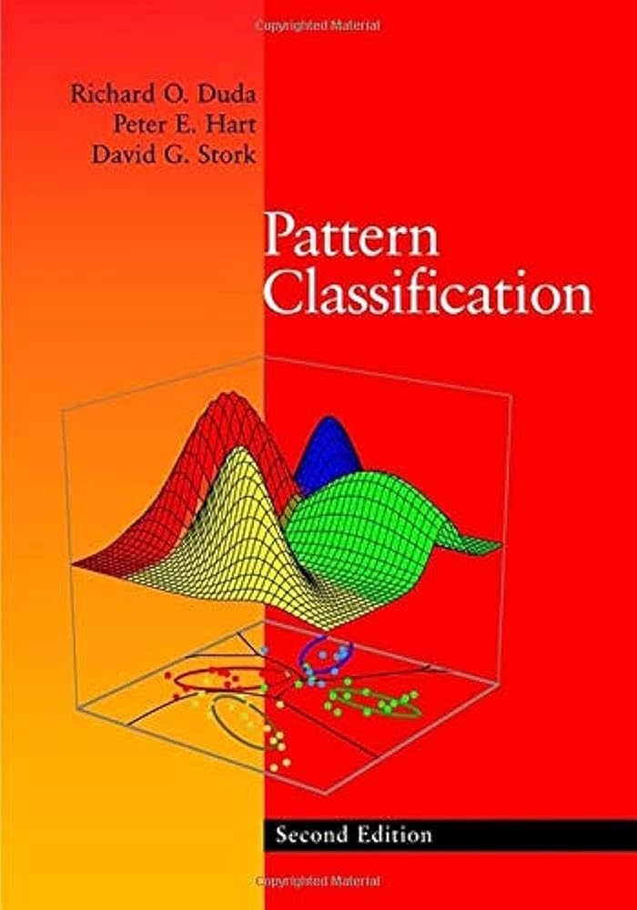
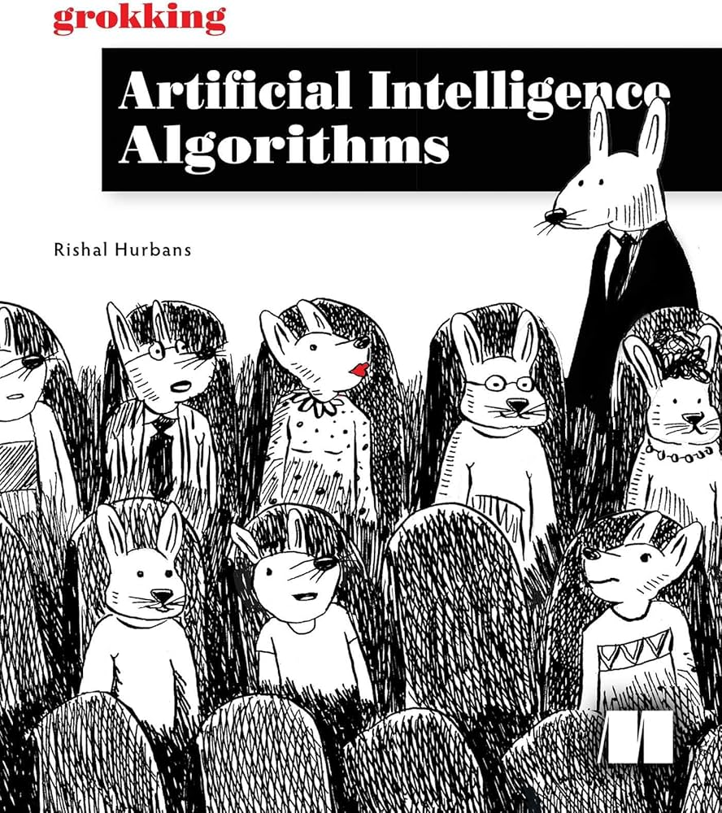
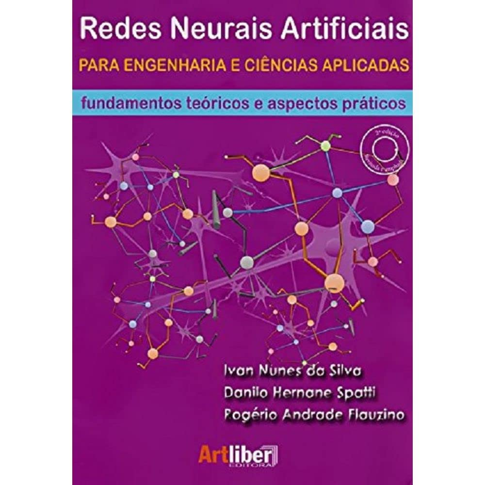
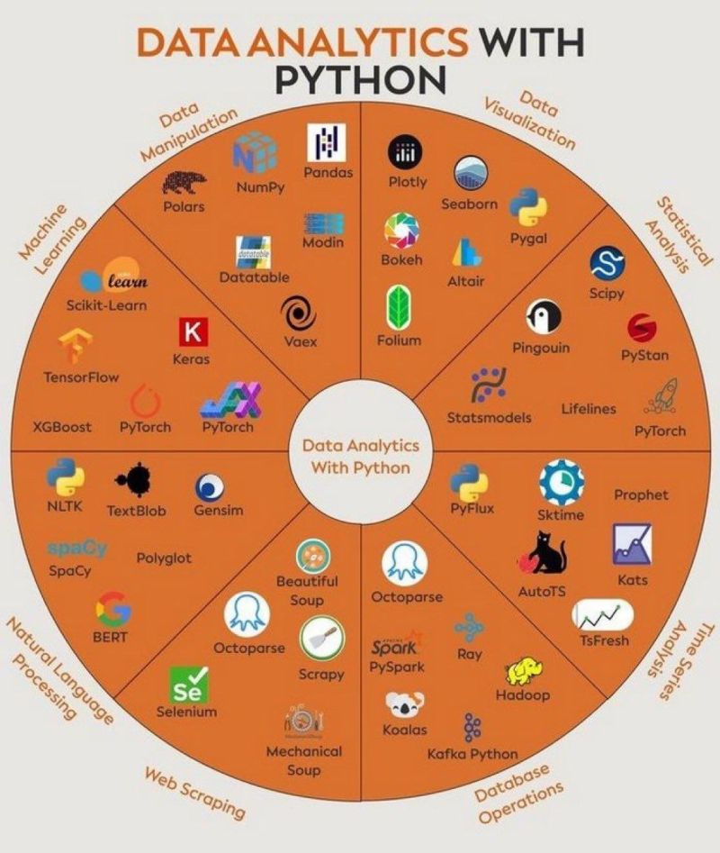
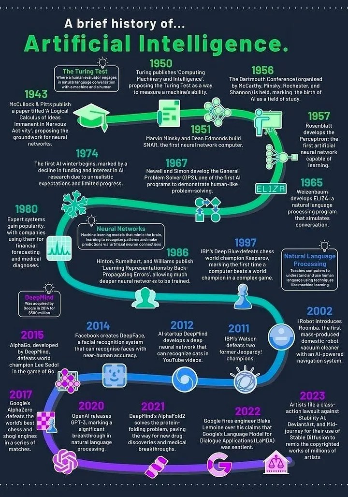
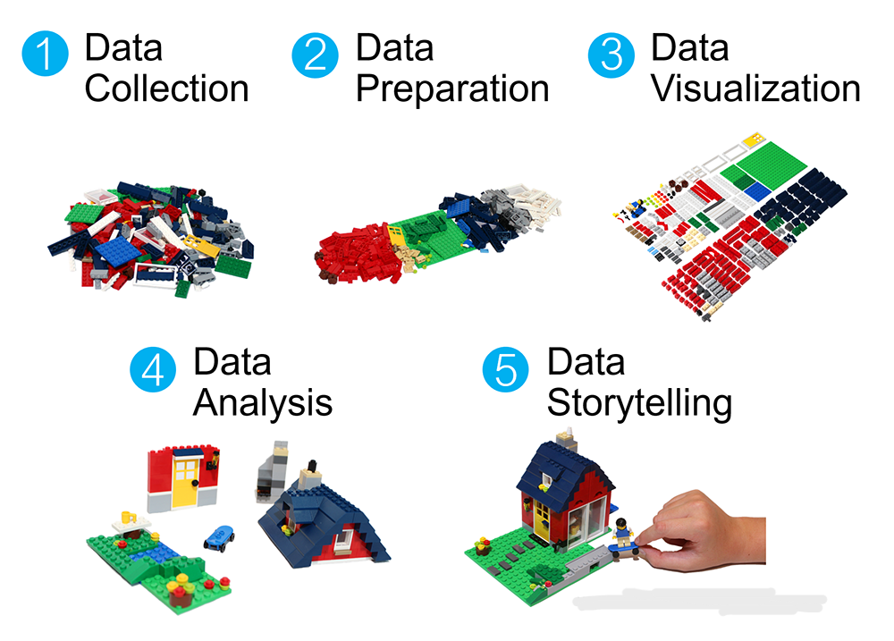
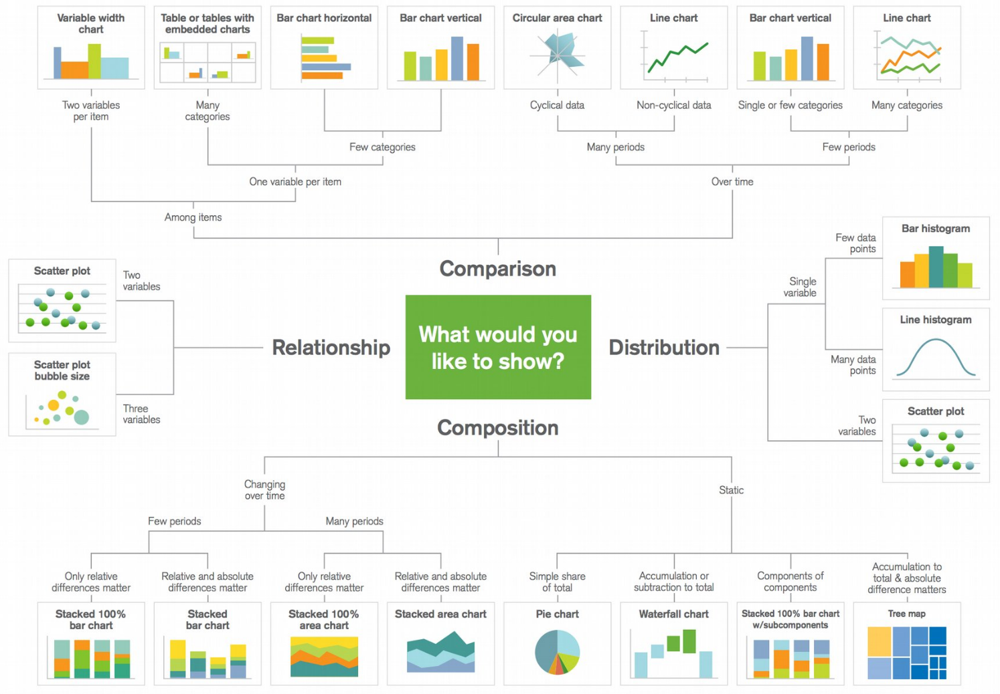

Ferramentas de Inteligência Artificial Aplicadas na Tomada de Decisão de Problemas Industriais
MBA EM ENGENHARIA DE MANUTENÇÃO 4.0
July 22, 2026
Apresentação do Professor
Apresentação do Professor
Apresentação do Professor
Breve CV: Matheus Henrique Pimenta Zanon
- Graduação em Matemática - UTFPR-CP
- Estudo - Análise de Sobrevivência;
- Mestrado em Matemática Aplicada e Computacional - UEL
- Desenvolvimento de Heurística - Otimização Discreta - Problema da Mochila Compartimentada;
- Aplicação em Problemas de Corte e Estoque;
- Doutorado em Bioinformática - UFPR/UTFPR
- Desenvolvimento de métodos de Machine Learning;
- Aplicação em Estudos biológicos
Apresentação do Professor
10 anos de trabalho com informática, sysadmin, Linux e analista de sistemas;
Consultoria de Machine Learning em empresas como Natura
Desenvolvimento de softwares de otimização e machine learning (2 Registros INPI)
Atualmente é pesquisador pela Universidade de São Paulo (USP-ESALQ) e SB100 FAPESP
Apresentação do Professor
CONTATOS
e-mail: omatheuspimenta@outlook.comLinkedIn: https://www.linkedin.com/in/omatheuspimenta
Qualquer outra rede social: <@omatheuspimenta>
Apresentação da Disciplina
Apresentação da Disciplina
Apresentação da Disciplina
AULAS
Sábado (Síncrono) - Google Meet - 08 às 12h e 13h às 17h (depende do sábado)
Durante a semana (Assíncrono) - e-mail
Apresentação da Disciplina
OBJETIVO
Proporcionar aos alunos a análise e solução de problemas reais da indústria sob a perspectiva da Pesquisa Operacional e Inteligência Artificial, contemplando as etapas de modelagem e estruturação matemática do problema, implementação computacional e avaliação da solução.
EMENTA
Machine Learning (ML) e Redes Neurais Artificiais: princípios de funcionamento e treinamento dos principais modelos de aprendizado. Implementação dos modelos matemáticos decisórios em Python. Estudos de caso de problemas na indústria implementando algoritmos para predição de variáveis em problemas de classificação e regressão.
Cronograma
Cronograma
- [AULA 01] - 01/08/2026 - manhã | Fundamentos da Inteligência Artificial;
- [AULA 02] - 08/08/2026 - tarde | Reconhecimentos de Padrões;
- [AULA 03] - 15/08/2026 - tarde | Redes Neurais Artificiais - Perceptron e Multi Layer Perceptron;
- [AULA 04] - 22/08/2026 - tarde | Redes Neurais Artificiais - Deep Learning - CNN e RNN (Attention Layer/Encoder Layer/YOLO ???)
- [AULA 05] - 19/09/2026 - manhã | Análise de Resultados - Feature Importance - SHAP/DALEX
- [AULA 06] - 19/09/2026 - tarde | Apresentações e Discussão dos Projetos desenvolvidos
Bibliografia Recomendada

NORVIG, P.;RUSSEL, S. J. Inteligência Artificial: Uma abordagem moderna. Campus, 2004. 2a Edição
Bibliografia Recomendada

DUDA, R. O.; HART, P. E.; STORK, D. G. Pattern Classification. 2nd Edition
Bibliografia Recomendada

HURBANS, R. GROKKING Artificial Intelligence Algorithms.
Bibliografia Recomendada

SILVA, da I. N.; SPATTI, D. H.; FLAUZINO, R. A. Redes Neurais Artificiais para Engenharia e Ciências Aplicadas: fundamentos teóricos e aspectos práticos
Como será a disciplina
Como será a disciplina
Como será a disciplina
AVALIAÇÃO
Avaliação
PROJETO
- Relatório Técnico contendo:
- Descrição dos dados;
- Pré processamento dos dados;
- Representação gráfica dos dados;
- Representação das medidas de posição e dispersão dos dados;
- Descrição do método utilizado;
- Apresentação dos resultados obtidos - métricas e matrizes de confusão;
- Discussão dos resultados obtidos - Feature Importance - SHAP values (se possível)
- Conclusão
- Breve apresentação do Projeto
PROJETO
PROJETO
Datasets Online
- Kaggle - https://www.kaggle.com
- UCI Machine Learning Repository - https://archive.ics.uci.edu/
- Data.gov - https://www.data.gov
- World Bank Data - https://data.worldbank.org
- OpenDataSoft - https://public.opendatasoft.com/explore
- Data.gov.uk - https://data.gov.uk
- Eurostat - https://ec.europa.eu/eurostat/data/database
- Data.world - https://data.world
- FiveThirtyEight - https://data.fivethirtyeight.com/
PROJETO
- GOV.UK - https://data.gov.uk
- United Nations Data - https://data.un.org
- Amazon Web Services (AWS) Public Datasets - https://registry.opendata.aws/
- Data.gov.au - https://data.gov.au
- Quandl - https://www.quandl.com
- KDNuggets - https://www.kdnuggets.com/datasets
- Harvard Dataverse - https://dataverse.harvard.edu/
- Data.gouv.fr - https://www.data.gouv.fr/fr/
- Google Public Datasets - https://cloud.google.com/datasets
PROJETO
- Awesome Public Datasets (GitHub) - https://github.com/awesomedata/awesome-public-datasets
- Base dos Dados - https://basedosdados.org/
- Gov BR Dados - https://dados.gov.br/
PROJETO
Algumas bibliotecas Python
- Manipulação de Dados
- NumPy: Uma biblioteca para processamento de dados numéricos.
- Pandas: Uma biblioteca para gerenciamento e análise de dados.
- Polars: Uma biblioteca para gerenciar e analisar dados rapidamente.
- Modin: Uma biblioteca para acelerar o processamento de dados usando Pandas.
- Datatable: Uma biblioteca para processar grandes volumes de dados.
- Vaex: Uma biblioteca para processar grandes volumes de dados rapidamente.
PROJETO
- Visualização de Dados
- Matplotlib: Biblioteca “padrão” para visualizações gráficas.
- Plotly: Uma biblioteca para visualizações gráficas interativas.
- Seaborn: Uma biblioteca para visualizações estatísticas.
- Bokeh: Uma biblioteca para visualizações gráficas interativas.
- Altair: Uma biblioteca para visualizações gráficas simples e interativas.
- Pygal: Uma biblioteca para criar gráficos interativos.
- Folium: Uma biblioteca para criar mapas interativos.
PROJETO
- Análise Estatística
- Scipy: Uma biblioteca para cálculos científicos.
- Statsmodels: Uma biblioteca para modelos estatísticos.
- Pingouin: Uma biblioteca para estatísticas simples.
- PyStan: Uma biblioteca para modelos estatísticos.
- Lifelines: Uma biblioteca para análise de sobrevivência.
- PyFlux: Uma biblioteca para análise de séries temporais estatísticas.
- Sktime: Uma biblioteca para análise de séries temporais.
- Prophet: Uma biblioteca para previsão de séries temporais.
PROJETO
- Análise Estatística
- Kats: Uma biblioteca para análise e previsão de séries temporais.
- AutoTS: Uma biblioteca para previsão automática de séries temporais.
- TsFresh: Uma biblioteca para extração de características de séries temporais.
- Darts: Uma biblioteca para previsão de séries temporais.
PROJETO
- Operações com Banco de Dados
- PySpark: Uma biblioteca para processamento de grandes volumes de dados.
- Ray: Uma biblioteca para computação distribuída.
- Hadoop: Um framework para processamento de grandes volumes de dados.
- Koalas: Uma biblioteca que utiliza interfaces Pandas no Spark.
- Kafka: Uma biblioteca para lidar com Apache Kafka.
PROJETO
- Extração de Dados (Web Scraping)
- Beautiful Soup: Uma biblioteca para extrair dados de arquivos HTML e XML.
- Octoparse: Uma ferramenta para extração de dados sem necessidade de programação.
- Scrapy: Um framework para extração de dados.
- Mechanical Soup: Uma biblioteca para navegar na web e extrair dados.
- Selenium: Um framework para testar interfaces de usuário e extrair dados.
PROJETO
- Processamento de Linguagem Natural
- NLTK: Biblioteca de Processamento de Linguagem Natural.
- TextBlob: Biblioteca para Processamento de Texto.
- Gensim: Biblioteca para Modelagem de Tópicos e Análise de Texto.
- spaCy: Biblioteca de Processamento de Linguagem Natural.
- Polyglot: Biblioteca com Suporte Multilíngue.
- BERT: Modelo de Aprendizado Profundo para Processamento de Linguagem Natural.
PROJETO
- Aprendizado de Máquina
- Scikit-Learn: Biblioteca de Aprendizado de Máquina.
- Keras: Biblioteca para Construção de Redes Neurais.
- TensorFlow: Framework de Aprendizado de Máquina.
- XGBoost: Biblioteca de Aprendizado de Máquina Reforçado.
- PyTorch: Framework de Aprendizado Profundo.
- PyTorch Lightning: Um Framework para Facilitar a Construção de Modelos de Aprendizado Profundo.
- TabICLv2: Uma biblioteca para modelos de aprendizado profundo em dados tabulares.
PROJETO
Outras bibliotecas Python
- YellowBrick: Suíte de visualização e ferramentas de diagnósticos para a seleção de modelos rapidamente;
- PyCaret: Workflows de Machine Learning com codeless;
- imbalanced-learn: Variedade de métodos para lidar com classes desbalanceadas;
- SHAP: Explicabilidade de modelos com poucas linhas de código;
- missingno: Visualização de valores faltantes de maneira fácil;
- prophet: Biblioteca para análise de dados temporais;
- parallel-pandas: Paralelizar biblioteca pandas de maneira fácil;
- featuretools: Engenharia de features automatizadas para modelos de ML;
- lazypredict: Treine 30 modelos de ML em poucas linhas de código;
- mlxtend: Coleção de funções utilitárias para processamento, avaliação e visualização de modelos de ML;
PROJETO
- sweetviz: Visualização de relatórios em poucas linhas de código;
- skorch: PyTorch + sklearn;
- faiss: Análise de similaridade em segundos (by Meta);
- category-encoders: Data encoder para dados categóricos;
PROJETO

Como será a disciplina
- Materiais didáticos;
- Notas;
- Avisos;
- Aulas gravadas;
Como será a disciplina
Fundamentos da Inteligência Artificial
Introdução - Breve e Geral
NÃO É TRIVIAL MODELAR E ANALISAR DADOS!!!!!!
Inteligência
Pode ser definida como a capacidade de:
- planejar;
- raciocinar;
- resolver problemas;
Inteligência
Pode ser definida como a capacidade de:
- planejar;
- raciocinar;
- resolver problemas;
- compreender ideias e linguagens;
- abstrair ideias;
- aprender
Inteligência
A ciência que conhecemos hoje surgiu pós 2ª Guerra Mundial;
“Inteligência Artificial” obteve esse nome após 1955;
Possui vários campos e aplicações:
- aprendizado de máquina;
- agentes inteligentes;
- sistemas especialistas;
- processamento de linguagem natural;
- deep learning;
Inteligência

Figure 1: https://qbi.uq.edu.au/brain/intelligent-machines/history-artificial-intelligence
Inteligência
ELIZA today: https://www.masswerk.at/elizabot/
Teste de Turing hoje já foi “vencido” por diversas IA. Alguns pesquisadores dizem que é “antigo” para as IAs de hoje.
Teste de Turing exige capacidades de:
- Processamento de linguagem natural;
- Representação do conhecimento;
- Raciocínio automatizado;
- Aprendizagem de máquina;
Inteligência

Inteligência
Origem no Latim:
Inter (entre) e Legere (escolher)
Habilidade de realizar, de forma eficiente, uma determinada tarefa;
Artificiale
Algo que não é natural, ou seja, produzido pelo homem.
É um tipo de inteligência produzida pelo homem para atribuir às máquinas algum tipo de habilidade que simula a inteligência do homem.
Ou ainda:
Inteligência
Ramo da ciência da computação que lida com a automação do pensamento e comportamento inteligente
Inteligência Artificial
“Se a inteligência artificial é a nova eletricidade, big data é o combustível dos geradores”
Kai-Fu Lee
Inteligência Artificial
Inteligência Artificial encorpora conhecimentos de diversas áreas:
- Matemática;
- Sociologia;
- Psicologia;
- Computação;
- Engenharias;
- Genética;
- Neurofisiologia;
- Linguística;
- Filosofia;
Inteligência Artificial
- IA forte: (utópica??) pesquisadores acreditam que ao dispor de um computador com super processamento e fornecendo o suficiente de “inteligência” poderá ser construído “consciência” como um ser humano;
Já temos algumas ‘fagulhas’ do que é definido como AGI - Artificial general intelligence, que é uma inteligência artificial que iguala ou supera as capacidades cognitivas humanas em uma ampla gama de tarefas cognitivas.
- IA fraca: (estamos aqui ainda!) problemas que exigem um comportamento inteligente podem ser modelados usando computação e assim obter soluções de problemas complexos!
Inteligência Artificial
IA foca em:
- domínio ou tarefa com objetivo específico;
- carro autônomo;
- tradução de textos;
- classificação de e-mail;
- classificação de imagens;
- identificação de imagens;
- entre outros…
Desafios na Ciência de Dados
Desafios na Ciência de Dados
- Como obter os dados;
- A qualidade dos dados obtidos;
- Entender o que os dados podem nos contar;
Desafios na Ciência de Dados
- Definição do Problema
- Coleta de Dados Seu modelo é tão bom quanto seus dados.
- Limpeza dos Dados Ninguém gosta dessa etapa que representa 80% do trabalho. Dados limpos = resultados confiáveis.
- Engenharia de Features A arte de transformar dados brutos em ouro. É aqui que a experiência faz toda diferença.
- Seleção de Features Menos é mais! Escolher as características certas é melhor que usar todas possíveis.
- Preparação dos Dados Split train/val/test - o tripé sagrado que vai validar seu trabalho.
Desafios na Ciência de Dados
- Construção e Avaliação do Modelo Finalmente chegamos na parte “divertida”! Mas note: é só uma parte do processo.
- Deployment Hora de colocar seu modelo no mundo real. Aqui descobrimos se ele realmente resolve o problema.
- Monitoramento e Retraining O trabalho nunca acaba! Modelos precisam de manutenção constante.
Ciência de Dados

Ciência de Dados
Modelagem dos dados, estrutura e armazenamento
Engenharia de Dados
Análise e visualização dos dados
Data Science e Inteligência Artificial
Dados \(\rightarrow\) Conhecimento \(\rightarrow\) Decision-maker
Visualização de Dados

Alguns Estudos de Caso
Estudos de Caso
- Previsão de Risco de Crédito para Bancos;
- Predição de refugo das peças em produção;
- Monitoramento de mídias sociais;
- Análise de mutações em genomas;
- Classificação da temperatura nos processos de mistura e aquecimento em uma planta industrial;
- Classificação de gêneros musicais;
- Predição de valores de alugueis;
- E muitos outros …
Conhecendo o Google Colab
- Google Colab (Colaboratory) é um ambiente de programação online gratuito.
- Baseado no Jupyter Notebook, permite executar código Python diretamente no navegador.
- Não requer instalação ou configuração: tudo funciona na nuvem.
- Ideal para aprendizado de máquina, ciência de dados e prototipação rápida.
Benefícios do Google Colab
- Gratuito: Disponível para qualquer usuário com uma conta Google.
- Acesso a GPUs e TPUs: Execute códigos mais rápidos com recursos de hardware avançado.
- Colaboração: Compartilhe notebooks e trabalhe em equipe em tempo real.
- Armazenamento na Nuvem: Salve seus notebooks no Google Drive.
- Suporte a Bibliotecas ML/DS: Pré-configurado com muitas bibliotecas populares como TensorFlow, PyTorch, NumPy, Pandas, entre outras.
Utilidades do Google Colab
- Ensino: Ferramenta excelente para ensinar ou aprender Python e ciência de dados.
- Prototipagem Rápida: Experimente novos modelos de aprendizado de máquina.
- Visualização de Dados: Crie gráficos interativos usando bibliotecas como Matplotlib e Plotly.
- Análise de Dados: Processamento e análise de grandes conjuntos de dados.
Como Funciona?
- Criação de Notebooks: Comece criando um novo notebook no Google Drive.
- Execução de Código: Escreva e execute código Python célula por célula.
- Armazenamento de Arquivos: Faça upload de arquivos ou conecte-se ao Google Drive.
- Hardware Avançado: Habilite GPUs/TPUs em “Ambiente de Execução”.
- Compartilhamento: Compartilhe o notebook com outras pessoas, similar ao Google Docs.
Exemplos de Aplicações
- Treinamento de modelos de aprendizado de máquina.
- Análise e visualização de dados para ciência de dados.
- Construção de pipelines de pré-processamento.
- Experimentação com novas bibliotecas e frameworks.
- Desenvolvimento de projetos colaborativos de pesquisa.
Recursos e Limitações
Recursos:
- Acesso a GPUs/TPUs de alta performance.
- Ambiente interativo fácil de usar.
Limitações:
- Tempo limite de execução para sessões (12 horas no máximo).
- Dependente de conexão à internet.
- Restrições de memória e armazenamento na nuvem.
Dúvidas?
Matheus Pimenta
Ferramentas de Inteligência Artificial Aplicadas na Tomada de Decisão de Problemas Industriais | Aula 01 | Matheus Pimenta